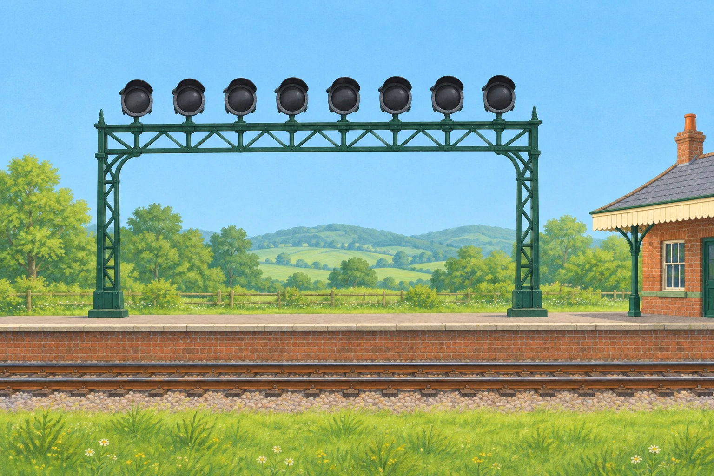
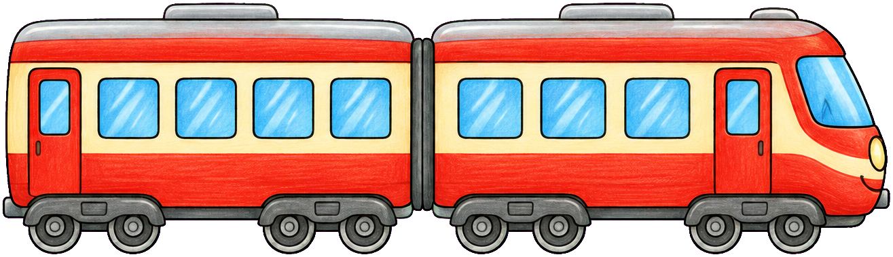

Spelling scene preview: Departure signal
Movement preview only. The backplate and train are draft paintings; final art gets separate layers, turning wheels and painted lamps.


0 / 8 wrong guesses
Movement preview only. The backplate and train are draft paintings; final art gets separate layers, turning wheels and painted lamps.


0 / 8 wrong guesses